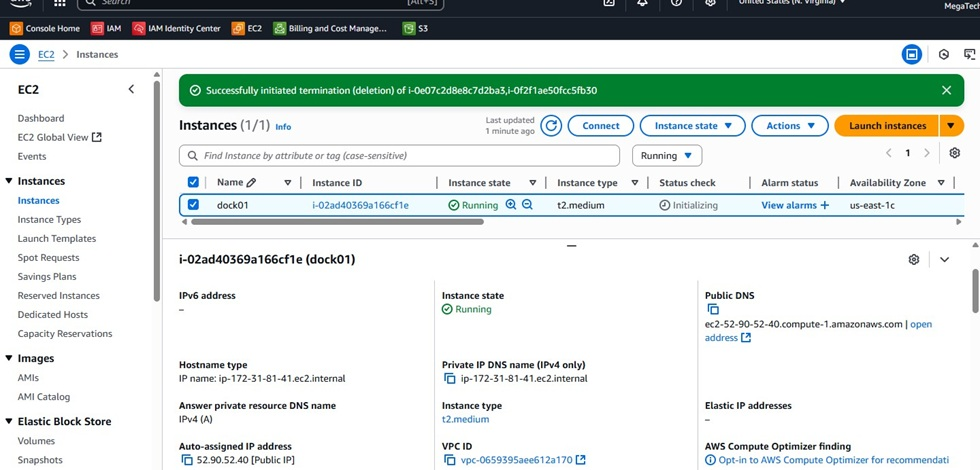
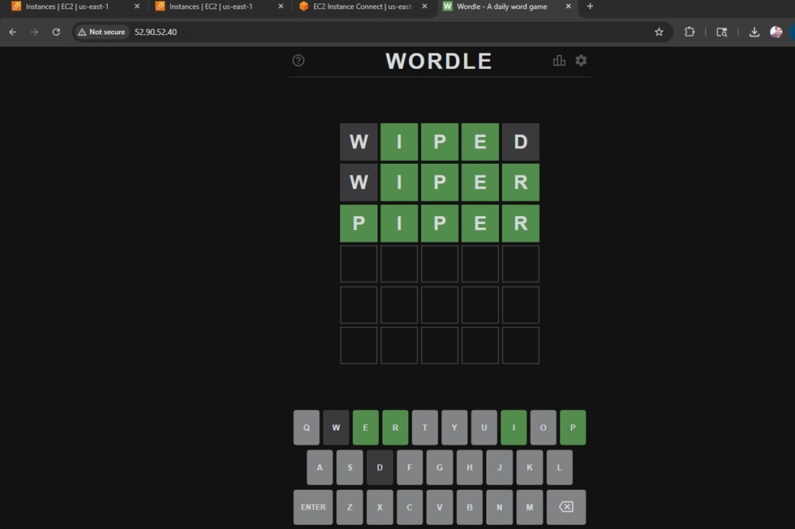
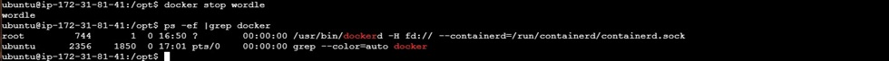

AWS Project
EC2 + Docker
Objectives
Setup an EC2 instance and deploy a containerized
application using Docker.
Create the EC2 Instance
1. Create a t2.medium Ubuntu instance.
2. In the EC2 builder, add a security group rule. Type "http", source type "Anywhere" so the website can be accessed.
Launch the instance.

Install Docker and Deploy WebApp
1. Select the instance and connect to it.
2. Create a script to install Docker.
3. Verify Docker installation by running the command - "docker version".
4. Go back to the EC2 instance and copy the public IP address. Paste it into a new browser tab.
5. Test out the application.

Docker Notes
1. Another way to check your Docker container is to run the linux command ps.
When the container is not running we see two processes. Once it starts, we see two additional processes.
2. One last note is that when you execute the docker run command, use the "name" parameter. When you run
"docker container list" you can see it displayed in the list. The first time I ran it I omitted the name
and the list was empty when I ran the docker container list command.
